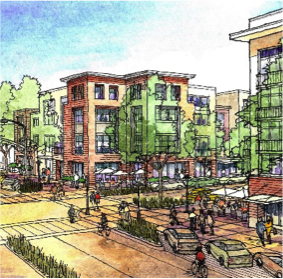

Harun Ekinoglu, Ph.D
Urban Design, Urban Development, Advanced Spatial Analysis, Policy Design |
Harun Ekinoglu

Urban policy Development
Research
Exhibitions Workshops
Resume
Copyright @ Harun Ekinoglu 2018